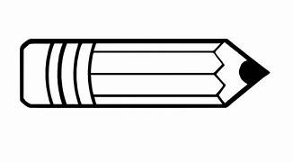

(Q1) Shanker made the following pictures also with washbasin
What shapes can they broken into that we can find area easily?
(i)
Into 2 squares
Into 1 sqaure and 1 rectangle
Into 2 rectangles
Into 2 rahmbous
(ii)
A square and a circle
A rectangle and a circle
A rahmbous and a circle
None of the above
(iii)

A cone and rectangle
A circle and rectangle
A cone and a segment
One rectangle one cone and one segment
(iv)
A square and two segments
A square and two circles
A rectangle and two circles
A rectangle and two segments
check Answer
clear